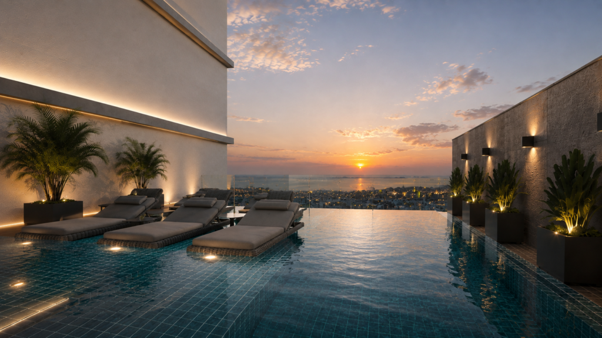
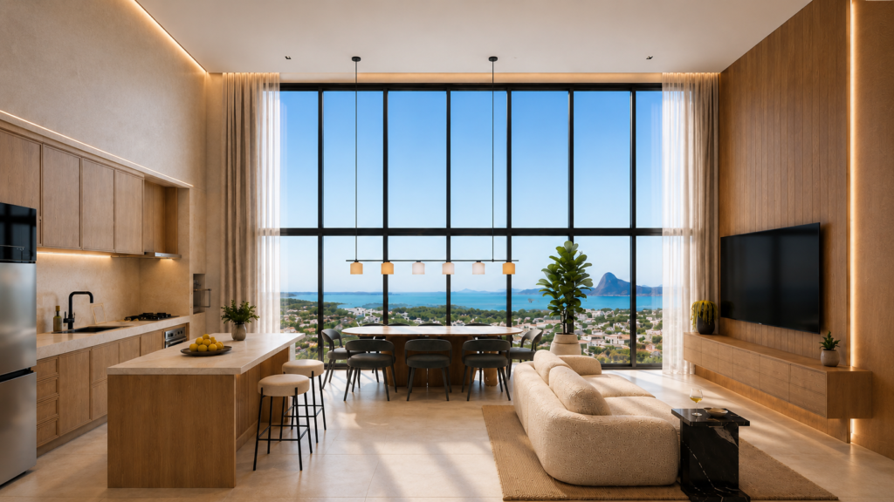
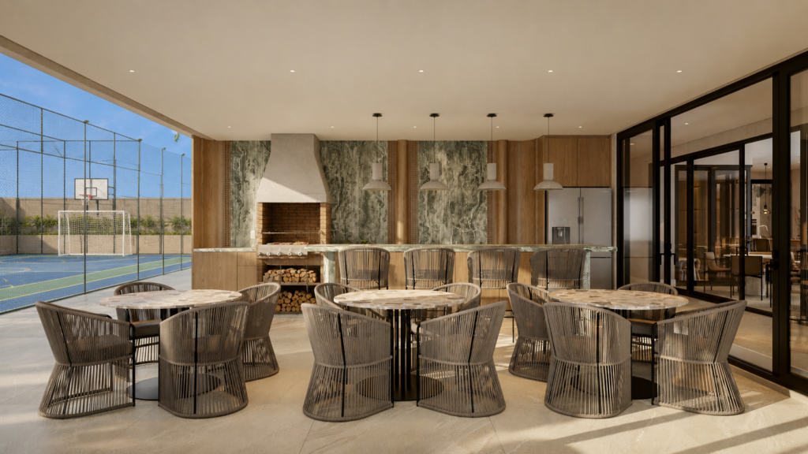
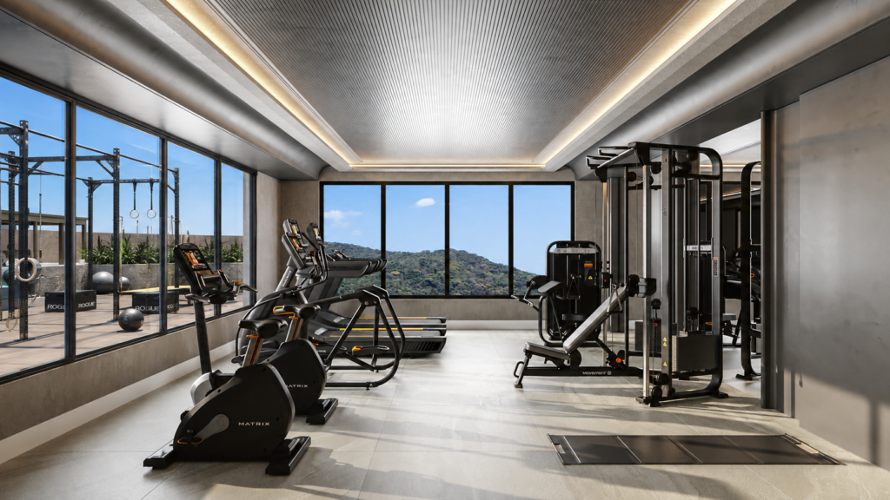
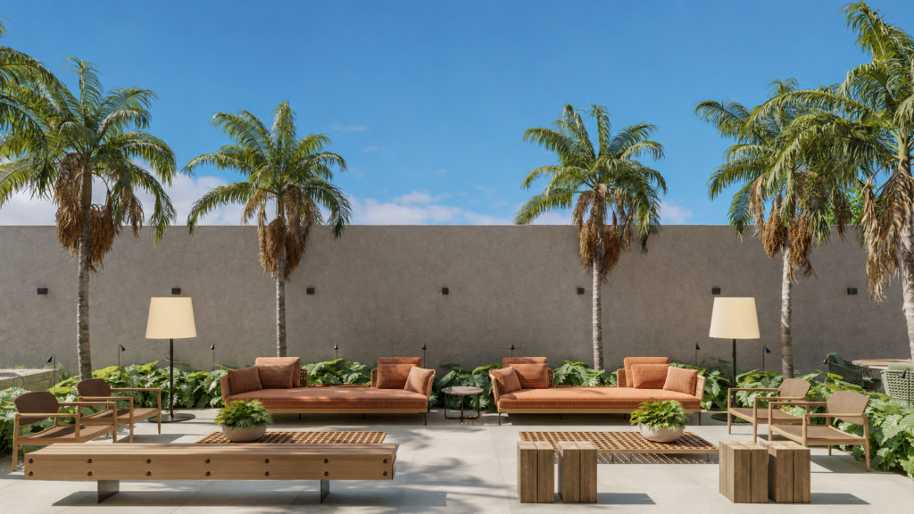
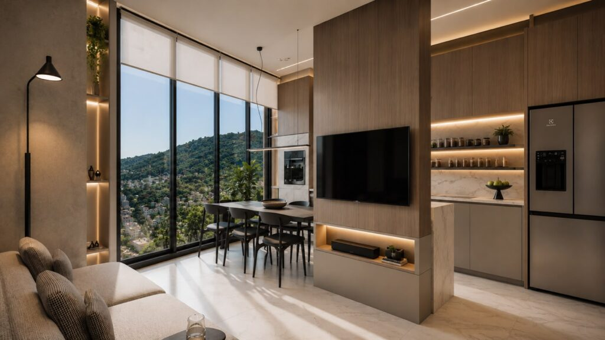
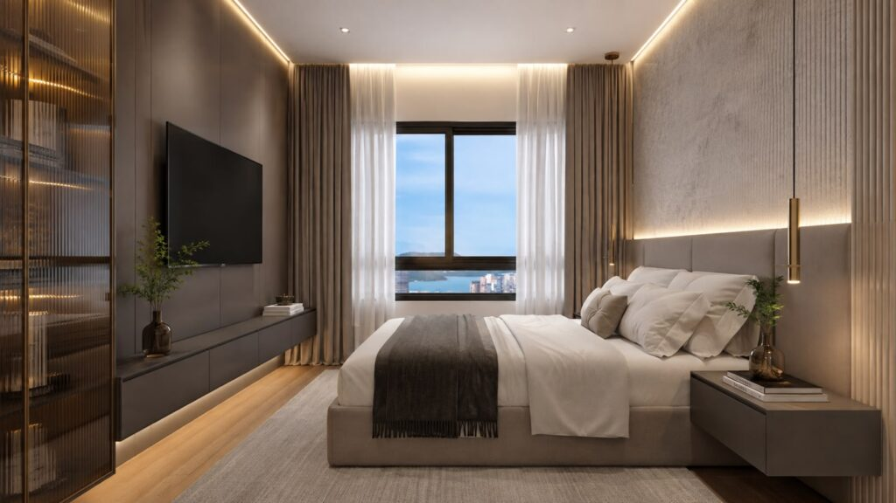
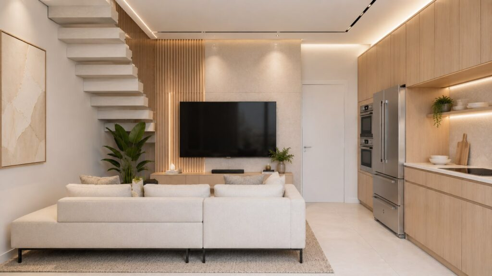
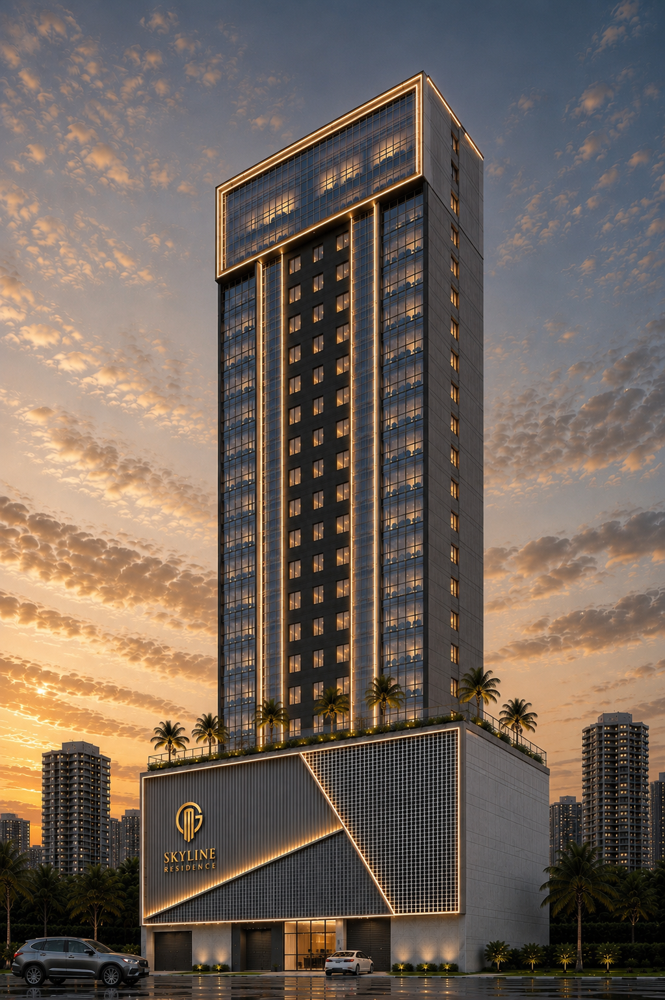
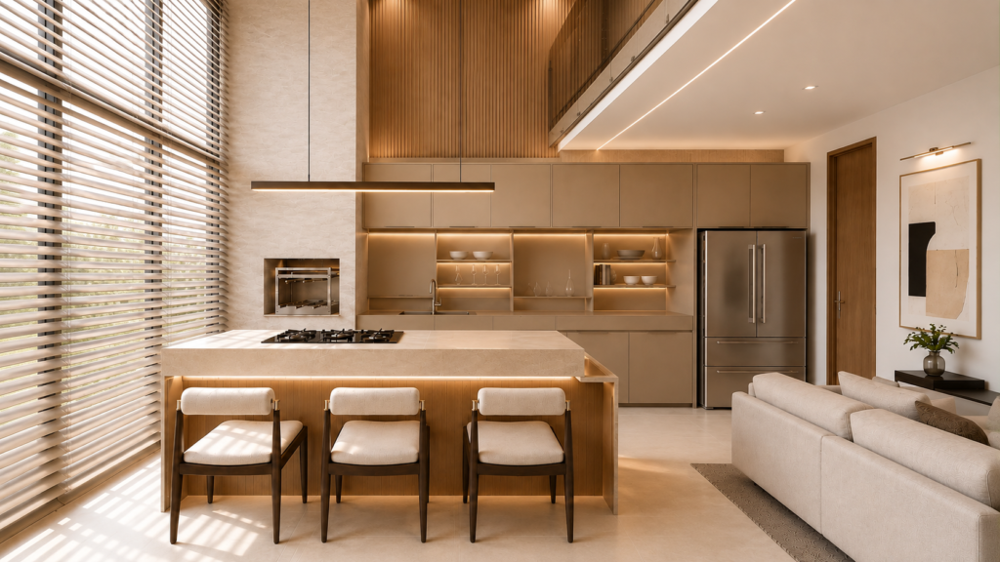

01 / LAZER PORTO BELO · SANTA CATARINASkyline
Skyline
Residence
Um novo empreendimento que traduz a visão da GLUCK sobre morar bem, unindo arquitetura contemporânea, planejamento e uma localização escolhida para acompanhar o desenvolvimento da região.
SABER MAIS →31PAVIMENTOS
800 m²DE LAZER E CONVIVÊNCIA
PORTO BELOSANTA CATARINA
O EMPREENDIMENTOUm novo horizonte
Um novo horizonte
para Porto Belo.
O Skyline Residence apresenta uma nova proposta de morar em Porto Belo, unindo arquitetura contemporânea, plantas inteligentes e uma estrutura pensada para diferentes estilos de vida. Com 31 pavimentos e unidades que vão de studios e apartamentos compactos a coberturas duplex, o empreendimento combina funcionalidade, conforto e uma relação privilegiada com uma das regiões de maior desenvolvimento do litoral catarinense.
Explore o Skyline →
ESPAÇOS PENSADOS EM CADA DETALHEVIVER, CONVIVER, DESFRUTARSeu tempo ganha
Seu tempo ganha
novos espaços.
São 800 m² dedicados ao lazer e à convivência. Ambientes para desacelerar, se encontrar e aproveitar cada momento.
Piscina de

02 / CONVIVÊNCIAEspaços gourmet
e salões de festas

03 / BEM-ESTARAcademia e quadra
poliesportiva
Um lugar para
cada jeito de viver.
Playground, brinquedoteca e pet place completam os espaços para curtir junto.
DETALHES QUE FAZEM SENTIDOUma ideia de morar
Uma ideia de morar
por inteiro.

LazerConvivência ao ar livre
InterioresLiving tipo 01
InterioresSuíte tipo 01
InterioresDuplex tipo 03
SKYLINE RESIDENCE · PORTO BELONO LITORAL CATARINENSEPorto Belo.
Porto Belo.
Um lugar em movimento.
Uma localização escolhida para acompanhar o desenvolvimento da região e se conectar a novas possibilidades de viver, investir e construir patrimônio.
ESCRITÓRIO GLUCK EM PORTO BELOR. Dorvalino Voltolini, 850
Porto Belo · SC
Ver endereço ↗Porto Belo · SC

ARQUITETURA PARA VIVER BEMQUEM SOMOSNós somos a
Nós somos a
Gluck Empreendimentos
Com forte atuação em Curitiba, a Gluck Empreendimentos vive um novo momento de expansão para o litoral catarinense e Foz do Iguaçu. Desenvolvemos projetos que unem arquitetura, qualidade e inteligência imobiliária, a partir de uma visão criteriosa sobre o potencial de cada região, criando novas possibilidades para viver, investir e construir patrimônio.
20ANOS DE EXPERIÊNCIA
+1.300HISTÓRIAS CONSTRUÍDAS
+20EMPREENDIMENTOS
“
Nossa visão é desenvolver em Porto Belo empreendimentos que elevem a experiência de investir, unindo sofisticação, exclusividade e valor patrimonial em cada escolha.
SKYLINE RESIDENCE · PORTO BELOO próximo capítulo
O próximo capítulo
pode ser seu.
Conheça o Skyline Residence e descubra uma nova forma de viver e investir no litoral catarinense.
FALE COM A GLUCK ↗